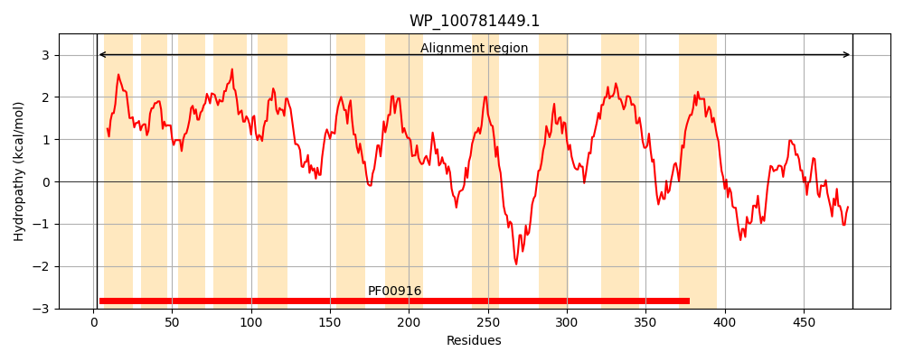
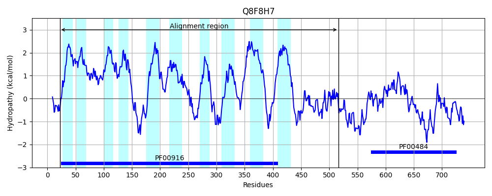
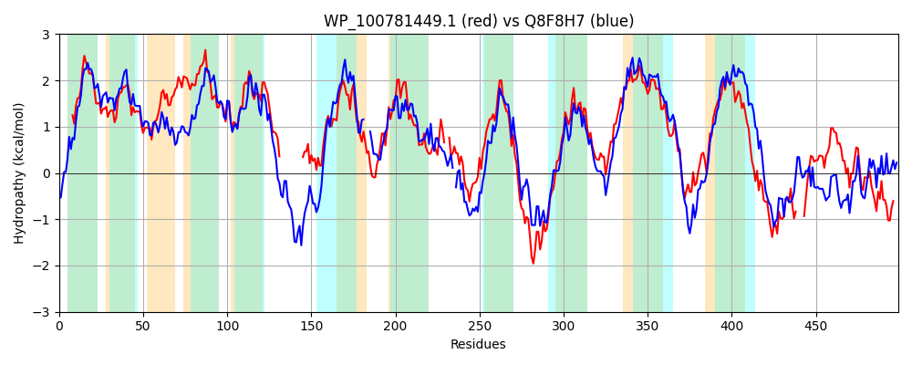

Hit Accession: Q8F8H7
Hit TCID: 2.A.53.3.8
Hit Description: gnl|BL_ORD_ID|16157 gnl|TC-DB|Q8F8H7|2.A.53.3.8 Carbonic anhydrase (EC 4.2.1.1) - Leptospira interrogans.
Mach Len: 499
e:0.000000
Query TMS Count : 11
Hit TMS Count: 10
TMS-Overlap Score: 7.000000
Predicted Substrates:CHEBI:5589;hydrogencarbonate, CHEBI:9335;sulfate
BLAST Alignment:
Score: 844 , Bit scores: 329 bits, E-value: 4.3e-105, Alignment length: 499, Percentage identity: 38
Query: 2 NTLRQDSLAGIVVFLVALPLCLGIAQASGLPPFVGLLTGIIGGLVVTALSPSRFAVSGPAAGLVTIVVAAIESLGSFSVFLMALVLAGVLQLLFGILRAGRFISLVPASVIKGMLAAIGILLIMQQIPVALG-------------TAEETGLAEVVQGNAAFSIKAIAVAAGGLLVLWLWGSPLIRRVKSLRWIPGPLIAVLLGCVTTLLLTHFAPQQLAALPRITLPAF--GSLGDLLGELESPAWSAWRNPSVWVVAVTLALVASLETLLSQEALKKLRPQNPPPSPNREMVAQGVGNLLSGVLGAMPITAVIVRSSVNVSNGAQSKLSIFIHGVLLLICGLWFSGLLTLIPLASLAAVLLYTGYKLATPRLFIEQFRQGAAQYVPFLATIGGIIAFGMLAGIGIGLATQMAFSLWRSHRHSLQLARYDDHYVLRIQ----QNLTFMHNPHLLALLAKIPEKSVVIVEHDSVGYLDPDVQAVLDDFAENAPQRGIRL 481
+ LR D AG+VVFL++LPLC+GI ASG P GL++GI+GG+V++ +S S +VSGPAAGL IV +I++LG+F+ FL+AL LAG+ Q++ G L+AG + P++V+KGMLAAIG++LI++QIP A+G E +E++ F+ AI + L+++ +W ++ I G L+A++ G + + F + + + P G+L DL + SP +S W+N +++ +A+ L LV SLETLL+ +A++K+ PQ S NRE+VAQG GNL S +LG +PIT+VI+RSS N+ GA+++ S F+HG+L+L+ + + IPLASLAAVLL GYKL ++ Q+++G Q++PF++T+ GI+ +L GIGIG + F + R+ + Q + + Y + ++ ++++F++ +L L K+P+ + +I++ Y+DPDV +++DF A R I+L
Sbjct: 22 DNLRHDFSAGLVVFLISLPLCIGIGFASGAPIVSGLISGIVGGIVISLISKSPLSVSGPAAGLTVIVFDSIKTLGNFNDFLLALCLAGIFQIILGFLKAGILSNFFPSAVVKGMLAAIGVVLILKQIPHAIGYDIDYEGDMGFFQKDRENTFSEILTAFYRFTPGAIILFTVALVLILIWEK---FKLHEKFIIHGSLVAIVTGVLLNEMFRIFELGIVVSGEHLIQPIQLNGAL-DLFLDDYSPNFSQWKNQTIYFIAIKLCLVMSLETLLNLDAIEKIDPQRRIVSKNRELVAQGTGNLCSAILGGLPITSVIIRSSANLHAGARTRFSSFLHGLLILVSVILIPVWIAKIPLASLAAVLLVVGYKLTDYKILQTQYKKGMDQFLPFISTLVGIVFTDILVGIGIGCLFSVFFIMRRNILNPYQFNKKEMAYGVEVKIDLSEDVSFLNKSSMLYKLDKVPDNAHLIIDGSRSKYIDPDVLEIIEDFKIVARSRNIKL 516 | Protein Hydropathy Plots: |
|---|
|  |  |
Pairwise Alignment-Hydropathy Plot:
|
|---|
|  |